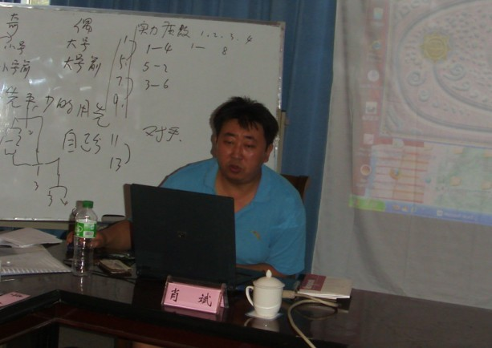
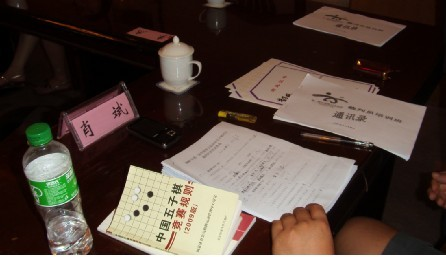

首届智力运动会裁判员四川温江培训圆满结束
#1 首届智力运动会裁判员四川温江培训圆满结束 作者：四川连珠魂 发表时间：2009-8-22 21:51:56
8月20号晚开始的由肖斌老师主讲的智力运动会裁判员培训于今天中午在温江幸运城圆满结束。参加五子棋裁判员培训的9名学员均考试合格拿到结业证书。


此次合格学员名单如下：
陈新，兰志仁，黄圣明，任继航，刘真，于亚君，汪清清，姜德志，刘东
［ 茗弈小刀 于 2009-8-22 22:12:34 时奖励此帖[金币加 20 威望加1］
#2 Re:首届智力运动会裁判员四川温江培训圆满结束 作者：浩瀚铭剑 发表时间：2009-8-23 7:22:58
 恭喜陈新，兰志仁，黄圣明，任继航，刘真，于亚君，汪清清，姜德志，刘东
恭喜陈新，兰志仁，黄圣明，任继航，刘真，于亚君，汪清清，姜德志，刘东
#3 Re:首届智力运动会裁判员四川温江培训圆满结束 作者：浩瀚棋社清清 发表时间：2009-8-23 7:31:10
 你们是不是在国色天香哪里培训的啊。。。。
你们是不是在国色天香哪里培训的啊。。。。
#4 Re:首届智力运动会裁判员四川温江培训圆满结束 作者：水 发表时间：2009-8-31 12:21:07
不是，是东方幸运城#5 Re:首届智力运动会裁判员四川温江培训圆满结束 作者：浩瀚铭剑 发表时间：2009-8-31 12:27:31
好地方
#6 Re:首届智力运动会裁判员四川温江培训圆满结束 作者：花月痕 发表时间：2009-8-31 22:41:24
恭喜
#7 Re:首届智力运动会裁判员四川温江培训圆满结束 作者：浩瀚铭剑 发表时间：2009-8-31 23:05:56
魂多多他们现在又是裁判了说 牛